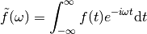
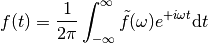
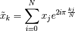
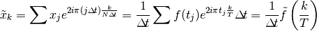
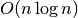

Fourier analysis¶
Formulas¶
Usefull formulae for the Fourier transform
Continuous Fourier transform

Inverse Fourier transform

Discrete Fourier transform

This is the formula used by computers.
Link between discrete Fourier transform and continuous Fourier transform :

With this formula you can get the correct scale for the x and y axis.
FFT¶
The algorithm used to perform the discrete fourier transform is called the fast Fourier transform (FFT). This algorithm is efficient when the array can be recursively splitted in a small numberof arrays of the same size. It is therefore very efficient when the size of the array is a power of two. In this case the complexity will be in  where  is the size of the array. This algorithm is inefficient if the size of the array has large integer in his factorization. For example :
is the size of the array. This algorithm is inefficient if the size of the array has large integer in his factorization. For example :
from numpy.fft import *
from numpy import rand
a = rand(2**17)
%timeit fft(a) # about 4.5 ms
a = rand(2**17-1) # 2**17-1 is a prime number
%timeit fft(a) # about 52 s